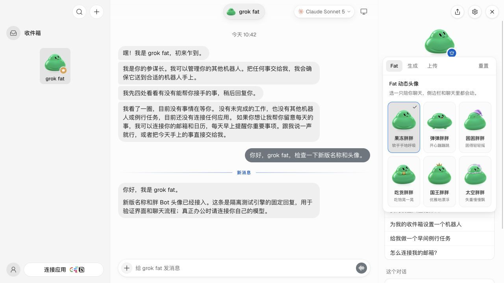
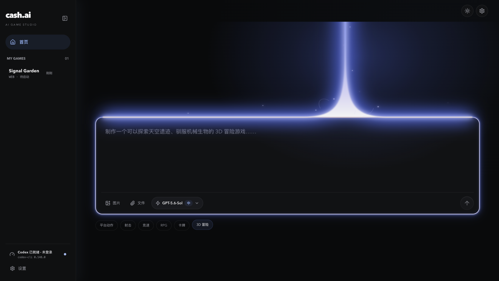

一个管理企业文档的 AI 问答网站，回答附带原文引用，可在本机或内网试用。
知识管理 / AI 问答个人项目
作品
每个项目都写了用途、实现和取舍，也放了对应的演示。
8 个项目
一个管理企业文档的 AI 问答网站，回答附带原文引用，可在本机或内网试用。
手册 / PRD 模板 / 阶段验收清单
一套中文开发手册，附 PRD 模板和验收脚本，供非技术产品经理配合 AI 编码工具开发网页 MVP。

一个整理国内外大模型资料的网站，可查型号、功能、榜单、价格和使用额度。

一个基于 OpenMausBot 定制的个人 AI Agent 桌面版，可连接模型处理任务，配有六款 Fat 主题头像。

一款基于 Innate-Labs 项目定制的 AI 游戏创作桌面软件，可按玩法描述辅助生成代码和素材，并在软件内试玩。


一个分析手机训练视频的 Python 工具，可提取二维骨架、估算身体重心、检测出拳，生成慢放标注视频。
进程是资源分配的基本单位。
线程是 CPU 调度的基本单位。
fork 后，子进程修改变量，
父进程是否看得到？
一个整理课堂文字记录的 Skill，可将转写稿或群聊整理成标准纪要、考试复习笔记。
 张健航AI 产品经理 / 个人作品
张健航AI 产品经理 / 个人作品一个收录张健航个人介绍和八个公开项目的作品网站，每个项目都有详情页和演示。